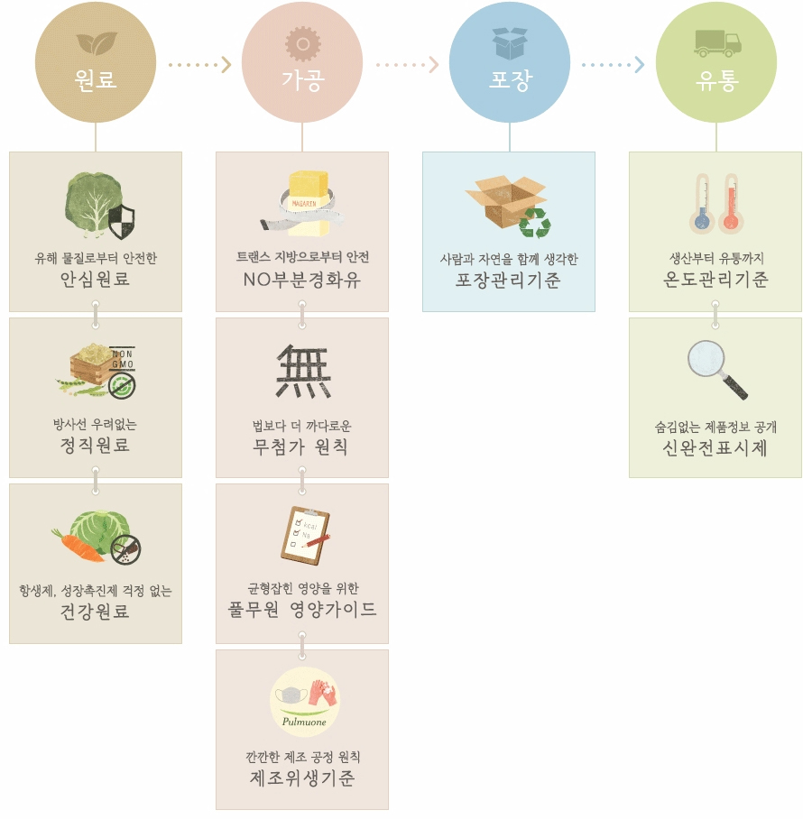
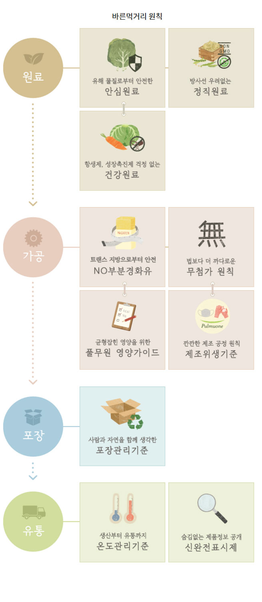

내 가족의 건강과 행복을 위한 바른먹거리
“풀무원을 만드는 사람들.
바른 마음으로 정직하게 만듭니다.
까다롭지만 원칙을 지켜 만듭니다.
풀무원을 만드는 사람들.
바른 마음으로 바른먹거리를 생각합니다.”
짧은 시를 닮은 이 글은 풀무원 최초의 텔레비전 기업 이미지 광고 속에 조용히 깔렸던 내레이션입니다.
그때도 지금도 풀무원은 ‘내 가족의 건강과 행복을 위한 바른먹거리’를 위해
국가 기준보다 더 엄격한 원칙들을 스스로 만들어 지켜오고 있습니다.
또 어떤 원료로 어떻게 만들었는지 누구나 알 수 있도록
제조부터 유통까지의 과정을 유리알처럼 투명하게 공개하고 있습니다.


하나도 숨김이 없어야 진짜 바른먹거리입니다.
풀무원식품은 신(新)완전표시제를 통해 제품의 원재료와 첨가물을 모두 공개합니다.
풀무원은 우리가 만든 식품에 대해 올바른 정보를 제공할 의무가 있고,
고객은 제대로 알고 스스로 제품을 선택할 권리가 있습니다.
풀무원의 법보다 까다로운 신완전표시제를 통해 제품에 사용된 모든 원료와 첨가물을 꼼꼼히 살펴보세요.
신완전표시제 사이트 바로가기
풀무원 제품(두부/나물, 김/미역)에 찍힌 바코드 번호나 제품 이름을 입력해보세요.
산지에서 마트까지, 바른먹거리가 만들어진 과정이 투명하게 공개됩니다.
풀무원은 2006년 국내 최초로 생산이력 정보시스템을 유기농 두부와 콩나물에 적용했습니다.
2007년에는 수산물 이력제도를 통해 김류 제품, 2008년에는 국산콩 두부와 국산콩 콩나물에까지 품목을 넓혔습니다.
생산이력제를 운영하기 위해서는 생산부터 판매까지, 식품의 원료부터 제조 방법 등
모든 정보를 정확하게 파악한 다음 기록, 보관하고 직접 관리해야 합니다.
그러기 위해서는 전 부문의 인적, 물적 협조와 기술적 노하우가 필요합니다.
풀무원은 안전한 바른먹거리를 위해 풀무원 제품들의 생산이력을 차근차근 공개해나갈 계획입니다.
생산이력 정보시스템 바로가기